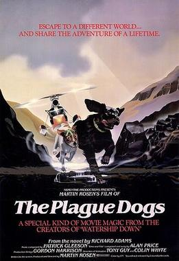

Martin Rosen
1982
103 minutes
TITLE: Plague Dogs TEXT PLACEHOLDER 121
This animated romp is a delight for the whole family, as long as your family loves seeing terrible things happen to cartoon dogs.
You're going to wonder if the cartoon dogs die in the end, assuming that they probably do. In a surprising twist, it is not made explicitly clear that the dogs are doomed at the end of the film, so you'll just have to use your imagination and base your expectations of what happens/happened at the end of the film based on the overarching tone of the film, which is mostly about terrible things happening to animals.
The first few minutes of this film is a gorgeous animated sequence that turns out to be a lab animal dog, one of the two main characters, being deliberately drowned in a tank of water before being pulled out and resuscitated. That dog is droopy and sad and cynical. The other dog, voiced by John Hurt, is much more upbeat and has a horrifying backstory about a time in which he had a loving owner before things go depressingly wrong. He also has a terrible head wound from his brain being cut open and experimented on.
When you were in gradeschool you had a cat named Shadow, short for Shadowfax. Unlike your other cat, he was allowed to roam outdoors. He would jump up and hang from the handle and "knock" on the door when he wanted to be let in. He was a beautiful solid grey cat and he was very loving and affectionate, a very gentle soul. One day he went missing and didn't come back for a few weeks. Once he returned, the top of his head was all a scabbed open wound that had just started to heal, a soupy mess of scab and pus. This finally healed over into a hairless patch on top of his skull. Afterwards he had frequent seizures, in which he would spin around on the floor and "breakdance", often losing bladder control and turning into a cat-sprinkler. It was dangerous to have him on his lap when he would start one of those seizures, since he would put his claws out in a panic and try not to fall.
Eventually the seizures got so bad that you could no longer have him on your lap. His condition deteriorated and he eventually had great trouble remembering what he was supposed to do in the litterbox. He would dutifully shit near the litterbox, but with a low success rate at actually making it all the way inside. After his head injury, he didn't like to go out as much, but sometimes he would insist on short trips outside to do his business in the wild. One day he went on another trip outside and never returned. The end.
This film with its bandaged-head scarred and brain-damaged dog reminds you of Shadowfax.
You remind yourself to maliciously suggest watching this film to as many people as you can so that you are not alone with your miserable memories.
Time to choose something different: